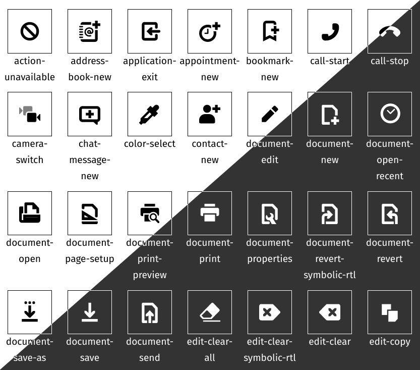

Adwaita Icon Web can be used by codes below. Even though it's not recommended, this is how SVG Icons work on browser without other libraries or dependencies.
<!-- Using from SVG Sprite -->
<svg style="width: 1em; height: 1em;">
<use xlink:href="/path/to/adwaita-icon-web/dist/adwaita.svg#call-outgoing"></use>
</svg>
You can also use each SVG Icons in
adwaita-icon-web/dist/svg/,
Read furthur information about SVG in HTML at Using SVG, SVG Symbol from CSS Tricks
However, this project provides javascript libraries to make it easier to use. With some setup codes, we can use icons by codes below.
<el-icon set="adwaita" name="call-outgoing"></el-icon>
$ npm install adwaita-icon-web
<!-- In HTML <head> section -->
<!-- Load adwaita.svg -->
<link icon
rel="preload"
set="adwaita"
href="/path/to/adwaita-icon-web/dist/adwaita.svg"
as="image" type="image/svg+xml">
<!-- Import icon.js -->
<script type="module">
import {Icon} from '/path/to/adwaita-icon-web/dist/icon.js';
customElements.define('el-icon', Icon); // define custom element for icons
</script>
In the codes above, there're 3 steps to set up icons.
set attribute to indentify icon set in <link icon> (adwaita).href attribute in <link icon>.Icon can be rendered by using <el-icon> (or whatever it has been defined to)
provide with specific set and icon's name which are listed in
Icon List section.
<el-icon set="adwaita" name="printer-error"></el-icon>
<el-icon set="adwaita" name="dialog-warning"></el-icon>
<el-icon set="adwaita" name="appointment-soon"></el-icon>
<el-icon set="adwaita" name="battery-level-20"></el-icon>
<el-icon set="adwaita" name="call-outgoing"></el-icon>
CSS color property can be used to set icon's color.
<el-icon set="adwaita" name="call-outgoing" style="color: #2196F3;"></el-icon>
CSS font-size property can be used to scale icons.
<el-icon set="adwaita" name="printer-error" style="font-size: 1rem;"></el-icon>
<el-icon set="adwaita" name="dialog-warning" style="font-size: 1.5rem;"></el-icon>
<el-icon set="adwaita" name="appointment-soon" style="font-size: 2.0rem;"></el-icon>
<el-icon set="adwaita" name="battery-level-20" style="font-size: 2.5rem;"></el-icon>
<el-icon set="adwaita" name="call-outgoing" style="font-size: 3rem;"></el-icon>
Using resources from NPM CDN doesn't require installation via npm. However, since many CDN use https://, please note that webpage have to serve on https:// otherwise browsers will reject to load CDN resources. (You can check error on browser debug console)
<!-- In HTML <head> section -->
<!-- Load adwaita.svg -->
<link rel="preload"
icon set="adwaita"
href="//unpkg.com/adwaita-icon-web@2.1.0/dist/adwaita.svg"
as="image" type="image/svg+xml">
<!-- Import icon.js -->
<script type="module">
import {Icon} from '//unpkg.com/adwaita-icon-web@2.1.0/dist/icon.js';
customElements.define('el-icon', Icon); // define custom element for icons
</script>
Since most web browser will block external file access,
adwaita.svg should be served on http:// or https://
For unsupport web browser, svg4everybody is recommended.